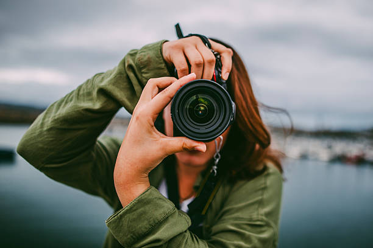
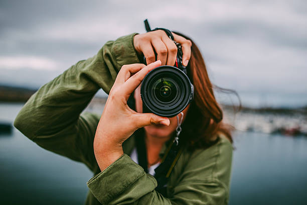

My Gallery
Here is some pictures of my favourite hobby and Interest
"Cooking is a passion that allows me to express my creativity while satisfying my love for good food. Experimenting with different cuisines and flavors brings joy to my everyday life. I enjoy sharing meals with friends and family, and I'm always on the lookout for new recipes to try, making cooking an ever-evolving adventure."
 "Reading is a cherished hobby that transports me to different worlds and allows me to explore new ideas and perspectives. I have a diverse taste in literature, ranging from classic novels to contemporary non-fiction. I believe that books are gateways to knowledge and imagination, and I enjoy sharing my thoughts and recommendations with fellow book lovers."

"Photography is more than just a hobby for me; it's a way to capture the world as I see it. I love exploring new places and finding unique perspectives. Each photograph tells a story, and I strive to convey emotions through my lens, whether it's the tranquility of a serene landscape or the vibrancy of urban life."
"Reading is a cherished hobby that transports me to different worlds and allows me to explore new ideas and perspectives. I have a diverse taste in literature, ranging from classic novels to contemporary non-fiction. I believe that books are gateways to knowledge and imagination, and I enjoy sharing my thoughts and recommendations with fellow book lovers."

"Photography is more than just a hobby for me; it's a way to capture the world as I see it. I love exploring new places and finding unique perspectives. Each photograph tells a story, and I strive to convey emotions through my lens, whether it's the tranquility of a serene landscape or the vibrancy of urban life."
 "Traveling is one of my greatest passions, offering me the chance to experience diverse cultures and create unforgettable memories. Each trip teaches me something new, whether it's about the history of a place or the warmth of its people. I love to document my journeys and share my experiences, hoping to inspire others to explore the world and embrace the beauty of adventure.
"Traveling is one of my greatest passions, offering me the chance to experience diverse cultures and create unforgettable memories. Each trip teaches me something new, whether it's about the history of a place or the warmth of its people. I love to document my journeys and share my experiences, hoping to inspire others to explore the world and embrace the beauty of adventure.